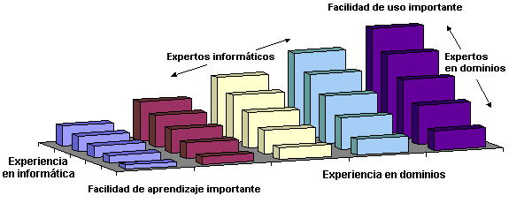
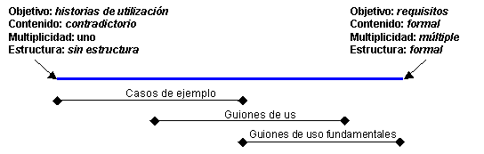

| Concepto: Diseño centrado en el usuario |
 |
|
¿Qué es el diseño centrado en el usuario?No existe un consenso claro sobre qué constituye el diseño centrado en el usuario. Sin embargo, John Gould y sus compañeros de IBM desarrollaron una propuesta en la década de 1980 llamada Diseño para la utilización [GOU88] que incluye las definiciones aceptadas más comúnmente. Lo desarrollaron a partir de una experiencia práctica en una serie de sistemas interactivos, más notablemente, el sistema de mensajería Olympic de IBM de 1984 [GOU87]. La propuesta tiene cuatro componentes principales, como se describe a continuación. Atención en los usuariosGould sugiere que los desarrolladores deberían decidir quiénes serán los usuarios e implicarlos lo antes posibles. También propone una serie de maneras de familiarizarse con los usuarios, sus tareas y requisitos:
En Rational Unified Process (RUP), los talleres se utilizan en varios estadios clave, pero deben complementarse con los tipos de actividades que describe Gould para poder crear una imagen precisa. (Parte del argumento que se esconde detrás es que las personas suelen describir lo que hacen de una forma bastante diferente a como lo hacen. Por lo general, se olvidan tareas realizadas y detalles que no parecen importantes, como la localización del trabajo o la existencia de "misteriosos" trozos de papel, o se omiten porque, "oficialmente" no forman parte del proceso actual). Integrado con diseñoLas tareas de utilización deben realizarse en paralelo al principio del desarrollo. Estas tareas incluyen el esbozo de la interfaz de usuario y el borrador de las guías de usuario o la ayuda en línea. Gould también resalta que la utilización debería ser responsabilidad de un grupo. Una característica importante del diseño integrado es que la propuesta general, la infraestructura, del diseño detallado de la interfaz de usuario se desarrolla y se prueba en un estadio temprano. Esta es una diferencia importante entre el diseño centrado en el usuario y otras técnicas puramente incrementales. Garantiza que el diseño incremental que se lleva a cabo en las fases posteriores encaja perfectamente en la infraestructura y que la interfaz de usuario es coherente en cuanto al aspecto, la terminología y el concepto. En RUP, esta infraestructura se puede establecer utilizando un modelo de dominio para asegurar que toda la terminología y los conceptos que aparecen en la interfaz de usuario son conocidos y comprendidos en el negocio en general y para los usuarios en particular. (También habrá subconjuntos del modelo de dominio relevantes únicamente para grupos de usuarios específicos. Debería ponerse cuidado para que el modelo de dominio esté organizado de forma que estos subconjuntos se puedan identificar con facilidad). A medida que el diseño de la interfaz de usuario avanza, muchas de clases de dominio se representarán como elementos de la interfaz de usuario. Los elementos de la interfaz de usuario, y las relaciones entre ellos, deberían ser coherentes con el modelo de dominio y representarse de forma coherente en todas las partes del sistema que se está diseñando. (Esto no ayuda únicamente a los usuarios, sino que mejora la reutilización de los componentes de la interfaz de usuario). Primeras pruebas de usuarioLas primeras pruebas de usuario incluyen las creación de los primeros guiones gráficos y el desarrollo inicial de prototipos de baja fidelidad. Los prototipos de alta fidelidad se crean cuando el proceso está más avanzado. Los guiones gráficos se pueden utilizar en conjunción con guiones de uso para escribir casos de ejemplo de utilización concretos para el sistema que se está diseñando. Los guiones pueden ser narrativos, ilustrados (utilizando las maquetas de la interfaz de usuario para las ilustraciones); los guiones gráficos, los ensayos (con usuarios) y los grupos centrados en el usuario son propuestas poco familiares para muchos desarrolladores de software. Sin embargo, son más rentables que el descubrimiento de diseños inadecuados o requisitos comprendidos incorrectamente cuando la implementación está en curso. Diseño repetitivoEl desarrollo orientado a objetos se ha convertido en sinónimo de proceso repetitivo. El diseño repetitivo se adapta a los problemas que necesitan un perfeccionamiento de la comprensión y tienen requisitos cambiantes. No resulta sorprendente que el diseño repetitivo sea un componente clave del diseño centrado en el usuario. Esto se debe, en parte, a las cambiantes necesidades de los usuarios en el tiempo, pero también a la complejidad inherente de la producción de soluciones de diseño que pueden satisfacer varias necesidades. Recuerde que en los métodos centrados en el usuario, el diseño repetitivo se produce en una infraestructura integrada. Evitamos de forma deliberada el desarrollo incremental, fuera de una infraestructura acordada, que puede llevar a una solución "mosaico". ¿Por qué un diseño centrado en el usuario?Satisfacción de las necesidades del usuarioLos sistemas repetitivos se basan en su capacidad para acomodar las necesidades de los usuarios. Esto no significa únicamente la identificación de varias comunidades de usuarios, sino también el reconocimiento del rango de habilidades, experiencia y preferencias de los usuarios individuales. Es frecuente que los desarrolladores y los gestores crean que comprenden las necesidades del usuario, pero este no suele ser cierto en la realidad. Normalmente, la atención se centra en cómo deberían realizar las tareas los usuarios, y no en cómo prefieren realizarlas. En muchos casos, las preferencias significan algo más que la sensación de tener el control, aunque este también es un tema importante. Las preferencias vienen determinadas por la experiencia, la capacidad y el contexto de utilización. Estos problemas se consideran lo suficientemente importantes en el proceso de diseño para garantizar un estándar internacional, [ISO 13407], llamado procesos de diseño centrado en el ser humano para sistemas interactivos. El estándar y los temas relacionados se tratan, de forma general, en el resto de esta página. Diseño de la interfaz de usuarioLos usuarios conocen e interactúan con un sistema a través de la interfaz de usuario. Los conceptos, las imágenes y la terminología que se presenta en la interfaz debe ser adecuada a las necesidades del usuario. Por ejemplo, un sistema que permite a los clientes comprar sus entradas es muy diferente de un sistema que utiliza de forma profesional el personal de venta de entradas. Las principales diferencias no residen en los requisitos ni en los guiones de uso detallados, sino en las características de los usuarios y el entorno en que funcionan los sistemas. La interfaz de usuario también debe proporcionar un amplio abanico potencial de experiencia en un mínimo de dos dimensiones, experiencia informática y en dominios, como se muestra en la Figura 1. La experiencia informática no sólo incluye una familiaridad general con los ordenadores, sino también experiencia en el sistema que se está desarrollando. Los usuarios que tienen poca experiencia en ordenadores o el dominio de problemas, en la esquina izquierda de la figura, requieren un enfoque sustancialmente diferente en la interfaz de usuario que los usuarios expertos, en la esquina derecha.  Figura 1: Los efectos de la experiencia informática y en dominios en la facilidad de aprendizaje en oposición con la facilidad de utilización Sea consciente de que el hecho de que los usuarios sin experiencia se conviertan en expertos con el tiempo no es una conclusión inevitable. Existen una serie de factores que pueden impedir esto, por ejemplo, una frecuencia de uso baja, una motivación baja o una elevada complejidad. En cambio, algunos sistemas pueden tener, predominantemente, usuarios expertos. En este caso, los factores pueden ser la formación, la frecuencia de uso elevada o la alta motivación (dependencia del trabajo). En la tabla 1 se muestran algunos de estos temas y sus efectos sobre la interfaz de usuario.
Tabla 1. Algunos factores que afectan al diseño de la interfaz de usuario Los sistemas interactivos deben estar diseñados para adaptarse a un intervalo adecuado de circunstancias y niveles de experiencia de usuario, o bien deben emprenderse pasos para restringir el universo de diseño. Por ejemplo, se puede utilizar la formación para reducir el requisito de facilidad de aprendizaje en un sistema complejo. De manera alternativa, se puede reducir el ámbito de un sistema para que satisfaga mejor los requisitos principales de sus usuarios (sugerencia de Alan Cooper en su libro The Inmates Are Running the Asylum [COO99]). Legislación y estándaresComo parte de un diseño centrado en el usuario, debemos tener en cuenta las habilidades y los atributos físicos de los usuarios. Ahora, la legislación empieza a reflejar estos aspectos. Esta legislación está diseñada, principalmente, para adaptarse a los usuarios con discapacidades. Sin embargo, el hecho de hacer que los sistemas sean accesibles para un mayor rango de usuarios suele verse como un beneficio para la comunidad de usuarios en su conjunto. La tabla de abajo muestra los recursos y la legislación relevantes para muchas partes del mundo:
Tabla 2a, Legislación relacionada con los discapacitados por país, región u organismo Aparte de la legislación, el diseño centrado en el usuario y el diseño de interfaz de usuario se tratan cada vez más como sujetos de estandarización, como se muestra abajo.
Tabla 2b, Estándares de diseño centrado en el usuario y la interfaz de usuario ANSI e ISO Diseño centrado en el usuario en RUPEl desarrollo de sistemas adecuados para las necesidades del usuario significa un esfuerzo significativo en el análisis de requisitos. En el diseño centrado en el usuario, este esfuerzo se centra en los usuarios finales. La disciplina de modelado empresarial cubre el modelado de trabajadores empresariales (para los que pertenecen al negocio) y actores de negocio (para los ajenos al negocio). Un punto de atención especial en el diseño centrado en el usuario es conocer los requisitos de las personas reales que desempeñarán los roles descritos en los productos de trabajado mencionados arriba. En particular, debemos evitar el diseño de seres humanos hipotéticos para los que es conveniente diseñar sistemas de software. Los productos de trabajo que describen usuarios sólo se deben escribir después de un contacto directo y sustancial con los usuarios. En el diseño centrado en el usuario, este contacto directo forma parte de un proceso que, a veces, se llama consulta contextual. Hugh Beyer y Karen Holtzblatt (en su libro Contextual Design, [BEY98]) describen la premisa de consulta contextual como: "...go where the customer works, observe the customer as he or she works, and talk to the customer about the work." (ir al lugar de trabajo del cliente, observarlo mientras trabaja y hablar con él sobre el trabajo). (En Atención en los usuarios ya se han listado algunos ejemplos concretos de esto). Este enfoque no se utiliza únicamente para comprender mejor los requisitos del sistema, sino también a los usuarios, sus tareas y su entorno. Cada uno tiene sus propios atributos y, en conjunto, se conocen como contexto de utilización. Los requisitos se detallan en el estándar ISO para el diseño centrado en el usuario, que se describen más abajo. Contextos de usoEl estándar Human-centered design processes for interactive systems (procesos de diseño centrado en humanos para sistemas interactivos) de ISO [ISO13407] identifica el primer paso de diseño como el conocimiento y la especificación del contexto de utilización. Los atributos sugeridos son:
Tabla 3: Contexto de utilización del estándar ISO para el diseño centrado en el usuario Resulta útil dividir el contexto de usuario en las partes constituyentes (tipo y rol de usuario) y, después, considerar las relaciones entre los cuatro contextos:
Figura 2: Relaciones entre contextos La figura 2 muestra que todas las tareas se realizan en un rol que desempeña un usuario en un entorno. Estos contextos se corresponden con los productos de trabajo de RUP, como se muestra en la Tabla 4.
Tabla 4, contextos estándar de diseño centrado en el usuario y RUP productos de trabajo Cada uno de estos contextos tiene un impacto significativo en el diseño de una interfaz de usuario apropiada. Consecuentemente, nos enfrentamos a una cantidad potencialmente grande de permutaciones. Incluso en un sistema pequeño, puede haber 2 entornos (p.ej. sitio del cliente y oficina), 3 tipos de usuario (novato en ventas, experto en ventas y gestor) y 6 roles (ayudante de ventas por teléfono, representante de ventas externo, etc.). Esto supone hasta 36 variaciones potenciales por tarea, aunque el conjunto de combinaciones realistas suele ser mucho inferior. Obviamente, las tareas deben describirse individualmente, ya que es poco probable que una sola descripción sea adecuada para todas las permutaciones. Una posibilidad es factorizar los contextos de entorno y usuario en la descripción del rol. Esta es la solución que adoptaron Constantine y Lockwood [CON99]. Esta propuesta implica proporcionar un "rol de usuario" independiente para cada permutación significativa de rol, usuario y entorno y, a continuación, nombrar el rol de usuario resultante con una frase descriptiva, en lugar de un simple nombre. Compare, por ejemplo, el rol "Cliente" con los roles de usuario "Cliente casual", "Cliente web", "Cliente habitual" y "Cliente avanzado". Cada descripción de rol de usuario incluye detalles del rol, de los usuarios (conocidos como titulares del rol) y del entorno. Para adoptar este enfoque con RUP, seleccione los actores que se corresponden con los roles de usuario. Casos de ejemplo, Guiones de uso y Guiones de uso esencialesLos términos casos de ejemplo, guiones de uso y guiones de uso esenciales tienen un grado confuso de superposición y se utilizan en diferentes enfoques para referirse a cosas ligeramente diferentes. Por ejemplo, en RUP, un "caso de ejemplo" es una instancia de guión de uso; simplemente una "vía de acceso" específica a través de los posibles flujos alternativos y básicos. No obstante, es normal encontrarse métodos de diseño centrado en el usuario y de interfaz de usuario que describen los casos de ejemplo como historias de utilización que contienen bastantes más detalles que los flujos de sucesos. A pesar de que esta información adicional puede ser irrelevante en fases de diseño posteriores, forma parte del proceso de conocimiento de los usuarios, tareas y entornos. Por lo tanto, los casos de ejemplo se pueden utilizar mucho (en la Creación de guiones gráficos y los Juegos de rol) en la disciplina de modelado empresarial, aunque la atención se dirige hacia los guiones de uso de la disciplina de requisitos. La figura 3 muestra la naturaleza de esta superposición. La escala de arriba incorpora una serie de factores diferentes que tienden a variar juntos. Por ejemplo, a medida que el objetivo se dirige hacia los requisitos, la estructura suele hacerse más formal. Los guiones de uso esenciales están a la derecha de los guiones de uso genéricos, ya que los roles de usuario los hacen un poco más específicos (consulte el apartado anterior) y tienen una estructura más formal.  Figura 3: Superposición de conceptos entre casos de ejemplo y guiones de uso en el diseño centrado en el usuario Las diferencias entre los guiones de uso del sistema y los guiones de uso esenciales se explican mejor con ejemplos. La Tabla 5 muestra un guión de uso del software de Constantine y Lockwood para utilizar [CON99]:
Tabla 5: Guión de uso genérico para obtener efectivo de un cajero automático En este ejemplo se detalla la secuencia de sucesos entre el actor y el sistema, la línea vertical entre las dos columnas representa la interfaz de usuario. Tenga en cuenta que a pesar de que Constantine y Lockwood recomiendan este estilo para guiones de uso esenciales, este guión de uso en particular no es esencial, ya que se basa en el detalle sintáctico de la interacción. Es decir, cómo se lleva a cabo la interacción. Un guión de uso esencial se centra en qué consiste la interacción (llamada semántica). La Tabla 6 es la versión esencial de la interacción.
Tabla 6: Guión de uso esencial para obtener efectivo en un cajero automático Este guión de uso captura la esencia de la interacción de obtener efectivo. Las cabeceras Acción del usuario y Respuesta del sistema se han reemplazado por Intención del usuario y Responsabilidad del sistema para reflejar el cambio de énfasis. Los diseños de interfaces buenos se centran en los objetivos y las intenciones del usuario, que suelen estar ocultos en los guiones de uso convencionales. Los guiones de uso esenciales son útiles sobre todo en las siguientes situaciones:
Sin embargo, los guiones de uso esenciales también tienen sus inconvenientes. Los guiones de uso totalmente correctos, como el de la Tabla 5, pueden ser tema de debate cuando se trata de extraer su esencia. Por ejemplo, ¿al insertar la tarjeta se identifica al cliente o la cuenta? En la mayoría de los cajeros automáticos existentes, se identifica la cuenta, aunque Constantine y Lockwood decidieron interpretarlo como identificación del cliente. Puede que haya sido una decisión deliberada en vistas de una tecnología más reciente como el reconocimiento de retina y la identificación mediante huellas dactilares, o puede que haya sido un descuido. En este caso, la consecuencia es una decisión adicional que deben tomar los clientes que tienen más de una cuenta. Otra dificultad que presentan los guiones de uso esenciales es que no son muy apropiados para la revisión con otros usuarios y otros interesados debido a su naturaleza abstracta. Parte de este problema proviene de tener que convertir los guiones de uso esenciales en una forma concreta que represente las acciones del usuario. Esto puede hacerse una vez que un modelo de diseño esté disponible mediante la escritura de casos de ejemplo que describen la interacción con términos concretos (similar en concepto a una realización de guiones de uso, aunque trata la interacción del sistema de usuario en lugar de la colaboración de objetos internos). Resumiendo, la construcción de guiones de uso esenciales no es recomendable en las siguientes situaciones:
Guiones de uso esenciales en RUPRUP no hace referencia explícitamente a guiones de uso esenciales, pero en la Tarea: Diseñar la interfaz de usuario, los guiones de uso esenciales se utilizan como punto de partida y, a continuación, se desarrollan y se aumentan con requisitos de utilización para crear Guiones gráficos, como se explica en la Directriz: Guión de uso. Esto implica eliminar todo el diseño o los detalles de implementación actuales de manera que sólo quede la semántica, el significado de la interacción. Después, al explorar varias alternativas de diseño, se añaden detalles sintácticos (cómo se produce la interacción) al guión de uso esencial como un tipo de realización. (Cada diseño alternativo es, en realidad, una realización del mismo guión de uso esencial).
Los guiones gráficos se pueden utilizar como entrada a la Tarea:
Prototipo de interfaz de usuario para desarrollar el Prototipo de interfaz de usuario. |
© Copyright IBM Corp. 1987, 2006. Reservados todos los derechos. |